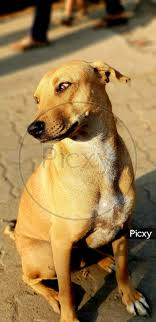

Bruno was rescued from a local shelter and now lives in Austin, Texas. He enjoys spending his days playing in the backyard and guarding the house. He is friendly, energetic, and loves meeting new people.
Last updated on February 2026 by Bruno's Owner